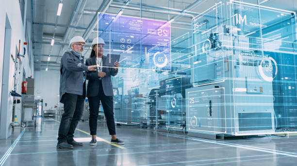
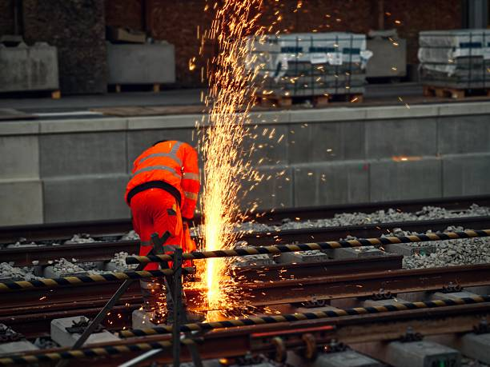

Rebuilding a Mission-Critical Seal Integrity Platform
Remote engineering excellence — rebuilding a fragile legacy control system into a unified, AI-ready quality platform for a global precision fastener manufacturer, delivered entirely from MKS Vision's offshore engineering centre.

Overview

Where precision manufacturing meets the demand for seal integrity
Our client is a global leader in precision fastener manufacturing — supplying safety-critical components to automotive OEMs, electric vehicle platforms, and consumer electronics brands. In each of these industries, the integrity of a mechanical joint is a performance guarantee. A single failed seal can trigger warranty claims, production stoppages, and regulatory non-compliance.
The client's test infrastructure was well-specified — four precision instruments covering gas detection, flow regulation, concentration monitoring, and test sequencing. Capable hardware. What was failing them was the software controlling it.
The Challenge
A legacy control system that had fallen far behind production demands
4
Instruments in test cell — none fully integrated
0
Historical test records stored or retrievable
0
Analytics or trend visibility available
0
Automation capability in existing system
The existing control platform was the single point of failure in an otherwise capable test setup. Slow, unstable under load, and loosely — or in some cases not at all — connected to the hardware it was supposed to orchestrate. The test cell was running blind: measurement data was never stored, making trend analysis, traceability, and audit reporting impossible.
Without historical data, operators had no visibility into trends across production batches or specimen populations. Without automation, every test cycle required manual intervention. Without a scalable architecture, extending to a second location was a project in itself. And without enterprise-grade security, the platform could not integrate into the client's broader digital infrastructure.
The Objective
Rebuild the platform completely — delivered through offshore engineering excellence

MKS Vision was engaged to rebuild the control platform in its entirety. The brief was unambiguous: address every limitation, integrate all hardware instruments into a unified control layer, persist every measurement, and build the analytics and reporting capabilities needed to run a modern, traceable test operation.
The target: a stable, production-grade platform unifying all instruments, storing all data, automating all workflows, and architected to support AI-powered analytics as a natural next step — ready to scale across multiple sites without re-engineering.
The Solution
A unified, intelligent platform built to production standards — and AI-ready by design
MKS Vision rebuilt the control platform from scratch — designing an architecture that treated hardware integration, data persistence, analytics, and security as first-class requirements. Every instrument in the test cell was brought into a single, stable software interface. The precision detector, flow controller, concentration analyser, and sequencing relay now operate as one unified system.
A structured data layer captures every test event — timestamps, measurements, sensor readings, specimen identifiers, and test parameters — enabling historical retrieval, trend analysis, and automated report generation for the first time. The analytics engine delivers real-time measurement charting, trend analysis across specimen populations, cross-specimen comparison, and automatic inert gas-to-air conversion for standards compliance reporting.
Workflows that previously required manual intervention at every stage are now fully automated — from test initiation through measurement, data logging, and report generation. The platform supports dual test specification modes and a multi-language operator interface, enabling international deployment without modification.
AI-Ready By Design
The platform is architecturally primed for AI extension. The structured data layer, real-time sensor streams, and historical measurement store provide the exact foundation needed to layer in predictive quality models, anomaly detection, intelligent test scheduling, and AI-driven process optimisation — a natural evolution path from operational platform to intelligent quality system.
AI Extension Opportunities
Predictive quality modelling
Train models on historical measurement data to predict seal integrity outcomes before testing completes
Anomaly detection
Automatically flag outlier readings and process drift in real time using ML-based pattern recognition
Intelligent test scheduling
Optimise test sequences and resource allocation dynamically based on production demand and history
AI-powered reporting
Generate natural language quality summaries, compliance reports, and root cause narratives automatically
Code quality and security were treated with the same rigour as functional requirements. A dual-layer assurance framework — continuous static analysis against OWASP standards and dedicated security scanning — ensured the codebase met enterprise-grade thresholds before deployment.
The Impact
From a fragile legacy system to a scalable, intelligent quality operation
0
Bugs and security vulnerabilities in the released build
4/4
Hardware instruments fully integrated into one platform
100%
Delivered from MKS Vision's offshore engineering centre
The rebuilt platform transformed what the client's test operation could do. All four instruments are fully integrated and centrally managed. Every result is captured, stored, and analysable. Workflows that once required manual intervention now run end to end without operator involvement.
For the client, the impact is both operational and strategic. Operators have real-time visibility into measurements, can compare performance across specimens instantly, and receive automatically generated compliance-ready reports. The historical data layer enables process improvement, drift detection, and audit-ready traceability that did not exist before.
Strategically, the client has a platform they can scale — across sites, across languages, across test specifications — and one that is architecturally ready to evolve into an AI-powered quality system. For MKS Vision, this engagement proves that complex industrial software, including deep hardware integration, can be engineered and deployed from an offshore centre with no compromise on quality or delivery.
- Full hardware integration — 4 instruments unified
- Live analytics & trend dashboards
- End-to-end test workflow automation
- Dual test specification support
- SonarQube Grade A — 0 bugs, 0 vulnerabilities
- AI-ready platform architecture
- Persistent data storage & retrieval
- Inert gas-to-air conversion
- Centralised multi-station management
- Multi-language operator interface
- OWASP security verified
- Offshore delivery — secure system access
Let's Build Something Remarkable Together
Talk to our engineering team about your industrial software, IoT, or quality platform challenges.
Start a ConversationRemote engineering excellence — delivered without compromise
Complex industrial engineering — hardware integration, live system access, enterprise security — delivered from MKS Vision's offshore centre. This is what remote engineering excellence looks like.
MKS Vision • Remote Engineering Excellence • Seal Integrity Platform